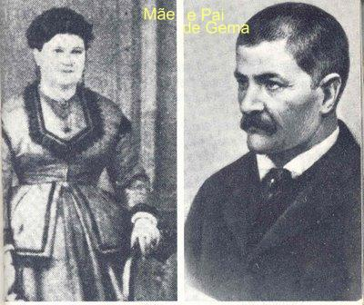
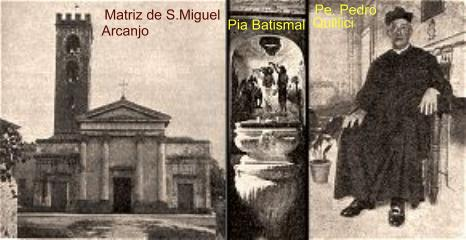
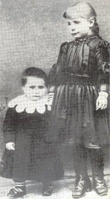
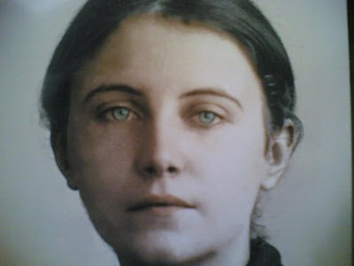
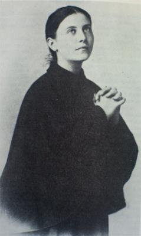
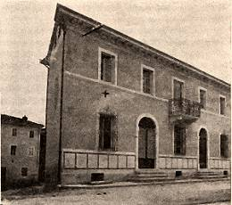

"AINDA JOVEM"
"PERDEU A MÃE E O PAI"
NASCIMENTO E INFÂNCIA
Gema nasceu no
dia 12 de Março de 1878, em Camigliano, um pequeno lugarejo no interior da Itália,
próximo a cidade de Pisa famosa por sua 
Seus pais Henrique Galgani e Aurélia Landi Galgani, ficaram muito felizes com o seu nascimento, porque era a primeira menina do casal que já tinha quatro filhos homens.
O Batizado foi realizado no dia seguinte ao nascimento, pelo Padre Pedro Quillici, Pároco da Igreja Matriz de São Miguel Arcanjo, e foi padrinho, o Capitão Maurício, que era o tio solteiro de 42 anos de idade, irmão de seu pai. E foi ele quem escolheu o nome da sobrinha: GEMA MARIA HUMBERTA PIA GALGANI, um nome bem grande e pomposo, que ele justificou a escolha, dizendo: GEMA, porque era uma coisinha bonitinha e muito preciosa, como um diamante; MARIA, em honra e homenagem a MÃE DE DEUS; HUMBERTA, saudando o novo Rei da Itália, Humberto I; PIA, em respeitosa recordação ao falecido Papa Pio IX; GALGANI, é o sobrenome da família.
Os avôs paternos, Carlos e Margarida, que viviam em Luca, felizes com o nascimento da netinha, também vieram para o Batizado em companhia do filho Mauricio.
Apesar de simples, a família tinha certa tradição, o avô e o bisavô paterno de Gema eram médicos e serviram ao exército italiano com empenho e heroicidade; também, no altar da Igreja de São João Batista, em Pescaglia, outro membro da família, o Cônego José Galgani, deixou um lindo poema que ele escreveu em honra da VIRGEM MARIA.

O senhor Henrique Galgani sofreu uma profunda e inconformada tristeza que com dificuldade buscava aliviar a tensão nervosa que o envolveu. Entretanto, com a chegada da época das aulas para as crianças, e não havendo colégio em Camigliano, ele decidiu se mudar com a família para Luca, porque assim, em novo ambiente, aquele acontecimento trágico seria um pouco aliviado. E sendo farmacêutico, logo providenciou um local e abriu uma pequena Farmácia, onde trabalhou firme, dedicando todos os seus esforços, para sustentar e pagar o estudo dos filhos.
Mas o comércio local era muito fraco, de modo que o faturamento semanal estava quase igualando as despesas. Com a chegada de mais três filhos: Antonio, no dia 14 de Março de 1880, Ângela, no dia 20 de Setembro de 1881 e Júlia, a caçula que nasceu no verão de 1883, a situação financeira do casal ficou muito mais apertada, dificultando bastante o cumprindo dos compromissos assumidos, os quais já estavam sendo pagos com algum atraso, porque uma família com nove (9) pessoas já apresentava uma despesa razoavelmente grande, que o casal não estava conseguindo cobrir com pontualidade.
RECEBE O SACRAMENTO DA CRISMA " FALECIMENTO DA MÃE
E para aumentar as dificuldades, logo após o nascimento de Júlia, a senhora Aurélia Landi Galgani foi alcançada pela tuberculose, que debilitou violentamente o seu organismo e ela começou a se definhar. Esta doença que era muito comum naquela época tinha um difícil tratamento e quase sempre, conduzia a morte. Na sua "Autobiografia", sobre este assunto, Gema escreveu mais tarde:
"Recordo-me que tinha menos de sete anos de idade e minha mãe, me segurando nos braços, entre lágrimas e soluços, me dizia":
- "Pedi muito a JESUS que me desse mais uma menina. Embora tarde, ELE satisfez o meu pedido. Mas estou muito doente e morrerei em breve. Se eu pudesse te levar comigo, tu virias"?
"Eu perguntei: E para onde iríamos"?
- "Para o Paraíso, com JESUS".
"Estas conversas com minha mãe me prendiam tão fortemente a ela, que jamais desejaria me separar dela e nem sequer, me ausentar do seu quarto".

Mesmo com todas as dificuldades, eram cumpridas com harmonia as atividades de cada dia: as crianças se dedicavam aos estudos e o marido trabalhava na Farmácia atendendo com entusiasmo a clientela, embora a saúde da senhora Aurélia piorasse a cada dia.
No dia 26 de Maio de 1885, Gema recebeu o Sacramento da Crisma, depois de devidamente preparada pela catequista, que zelosamente ia a sua casa para instruí-la, porque ela não queria participar do catecismo na Igreja, para não se afastar de junto da sua mãe.
Sobre o dia da cerimônia ela depois descreveu em sua "Autobiografia":
"Durante a Santa Missa, fiquei com receio de minha mãe morrer sem me levar com ela. Rezei muito para ela. De repente, uma voz me segredou no íntimo do coração":
- "Gema, me dá a tua mãe"?
"Respondi: Sim, se me levasse com ela".
- "Por enquanto terás que ficar com teu pai. Vou levar tua mãe para o Céu. Você me dá sua mãe com boa vontade"?
"Eu não tinha alternativa e aceitei. Terminada a Santa Missa regressei apressadamente a casa".
Para evitar o perigo de contágio e conhecendo a teimosia da filha, o senhor Henrique decidiu levá-la para a casa dos tios maternos, Antonio e Elisa Landi. Mas o sofrimento da senhora Aurélia continuou até o dia 17 de Setembro de 1886. O seu organismo não reagindo mais ao tratamento, ela faleceu, entregando sua alma a DEUS. Gema ficou inconsolável.
COLÉGIO DAS ZITAS " PRIMEIRA COMUNHÃO
Mas a vida tinha que continuar e por isso, seu pai providenciou o retorno dela aos estudos, não só como necessidade de aprendizado, mas também como um meio de ocupar a sua mente e de não deixá-la só pensando na mãe. Gema recomeçou os estudos orientados pelas senhoras Mencacci e Bárbara Poli.
Sendo a família do senhor Henrique tradicionalmente religiosa, logo ele quis proporcionar à filha a oportunidade da Primeira Eucaristia. Com este objetivo, matriculou Gema na Escola das Irmãs Oblatas do ESPÍRITO SANTO, também denominadas de religiosas de Santa Zita, ou simplesmente as "Zitas". Lá o aprendizado não era só de Religião, porque as Irmãs ensinavam também os idiomas: Inglês e Francês, além de Desenho e Costura, Matemática, História, Ciências e outras matérias. Finalmente, no dia 17 de Junho de 1887, sexta-feira, Festa do SAGRADO CORAÇÃO DE JESUS, Gema recebeu a primeira Sagrada Comunhão. Na sua "Autobiografia" relata as emoções deste dia tão especial:
"O que se passou entre mim e JESUS ainda hoje não sei explicar. O SENHOR se fez presente a minha alma de uma maneira muito forte. E tive o ardente desejo de que aquela união se mantivesse para sempre. Cada vez mais me sentia mais cansada do mundo e mais amante do recolhimento. Naquela manhã, JESUS me fez sentir o desejo de me consagrar totalmente a ELE na vida religiosa".
OS MIMOS PATERNOS
Passados aqueles dias ela voltou para casa e retornou ao seu cotidiano. Estava com a idade de nove (9) anos, e era muito bonita, loira com os cabelos compridos e os olhos bem azuis. Este tempo, de certo modo, foi um período difícil em sua existência. Seu pai a mimava muito, tornando-a preferida entre os irmãos, e o pior, fazia todas as suas vontades. Na Escola mostrou-se irrequieta e às vezes teimosa. Afastou-se da Sagrada Comunhão que recebia nas Santas Missas durante a semana, e também revelou um esfriamento espiritual. No Colégio, raro era o dia em que não recebia um castigo. Não sabia as lições e por pouco não foi expulsa. Só pensava em se divertir. Queria sair a passeios todos os dias e sempre estrear belos vestidos.
Na sua "Autobiografia" ela escreveu:
"Naquele espaço de tempo, que durou um ano, a única coisa boa que eu fazia era a caridade para com os pobres. Quando saia de casa levava dinheiro, ou um pouco de farinha, de pão ou de outras coisas, e distribuía para os pobres. Aos que vinham bater à nossa porta, lhes dava roupas e tudo o que viesse parar às minhas mãos. Quando o confessor me proibiu de dar coisas sem o conhecimento de meu pai, nunca mais o fiz. Este fato fez com que se operasse em mim uma profunda mudança. Como meu pai não me dava mais dinheiro e eu não dispunha dos próprios meios, já não podendo socorrer os pobres, acabei por detestar aqueles vestidos e enfeites, desprendendo-me assim das coisas mundanas".

No dia 11 de Setembro de 1894, aos 18 anos de idade, também morreu o seu irmão Gino. Ele era o preferido dela, por ser muito estudioso e bastante responsável. Estava no seminário de Luca preparando-se para o sacerdócio. A tuberculose, que era um terrível mal da época, também o pegou e o matou.
Todas estas mortes pesaram muito no coração de Gema, principalmente a lembrança da morte de sua mãe, a qual sempre lhe arrancava lágrimas. E de modo positivo, estes acontecimentos contribuíram profundamente para o seu amadurecimento.
Por outro lado, em face da morte da mãe de Gema, para que as crianças não ficassem desamparadas, vieram morar com elas para ajudar as tias maternas Elisa e Helena. Elas eram piedosas e cheias de carinho, mas como é natural, não tinha aquele mesmo afeto materno.
DESEMPENHO NO COLÉGIO
No Colégio Gema era aplicada nos estudos, mas não era brilhante. Algumas professoras a considerava "orgulhosa", pelo seu caráter aberto e resoluto, e o modo conciso e seco de falar. Mas na realidade ela não era nada disto, tinha o coração dócil, era honesta e obediente, um maravilhoso mar de inocência e de sinceridade. Todavia, nem todas as Irmãs Zitas tinham um conceito positivo sobre Gema. Quando ela mostrou o desejo de entrar no Convento, uma religiosa deu a seu respeito informações tão negativas que ela não foi aceita.
Quanto aos estudos, era atenciosa e aplicada, mas verdadeiramente tinha alguma dificuldade. Mas, se esforçava e rezava muito, suplicando a ajuda do SENHOR e da VIRGEM MARIA, e na época dos exames, sempre levava estampas do SAGRADO CORAÇÃO DE JESUS e de NOSSA SENHORA para ajudá-la. Nunca perdeu um ano de estudo, assim como não ficou com nota baixa em alguma matéria.
Passado aquele ano "de um pouco de frigidez" com a religião, já a partir dos dez anos de idade retornou ao seu verdadeiro caminho e jamais se separou de JESUS.
ATUANDO COMO
CATEQUISTA 
Estava com 15 anos de idade, quando as dificuldades financeiras de seu pai novamente cresceram, atingindo a índices quase insuperáveis. Isto o obrigou a vender uma chácara em Santa Maria Del Giudice, onde a filha passava horas embaixo de uma frondosa árvore, lendo preciosas passagens da vida de JESUS para as crianças da redondeza, que ouviam extasiadas.
Por iniciativa da Diocese, foi organizado um Concurso de Catequese. Gema ficou interessadíssima e se preparou com muita responsabilidade e, no dia 8 de Julho de 1894, participou e venceu o Concurso de Luca, recebendo como prêmio (uma linda Bíblia Sagrada) das mãos de Monsenhor Ghilardi.
ADOECEU PELA PRIMEIRA VEZ
Todavia, a saúde dela começou a apresentar problemas. Os médicos relembrando o acontecido com a mãe e o irmão, recomendaram que interrompesse os estudos e a proibiram de fazer grandes esforços mentais e físicos.
Em consequência dessa dificuldade, começou a crescer no coração de Gema o desejo de se unir a sua mãe e ao seu irmão Gino na eternidade. Ela sabia e tinha consciência de que isto só podia ser conseguido à medida que JESUS tomasse posse de seu coração. Então a Sagrada Eucaristia passou a ser o alimento forte e necessário ao seu espírito, que fervorosamente ela buscava diariamente na Igreja. Escreveu na sua "Autobiografia":
"Apesar de eu ser tão má, JESUS vinha ao meu peito, permanecia comigo e me dizia tantas e tantas coisas bonitas".
Sua tia Helena recorda momentos de sua doença:
- "Eu lhe aconselhava a não madrugar para ir a Igreja, porque podia lhe faze mal. Ela respondia":
"Como posso estar tanto tempo sem JESUS no coração? Quando estou com JESUS sinto que nada me falta".
"Ela esperava que eu saísse do seu quarto e logo se levantava para ir receber a Sagrada Comunhão na Igreja de Santa Maria da Rosa, até que um dia lhe disse que tinha pedido ao seu confessor para lhe proibir. Confrontada com esta situação, Gema respondeu":
- "Está bem. A obediência é santa"!
- "Na manhã seguinte, não saiu para comungar".
Como são admiráveis a obediência e a humildade dos santos!
AMOR E SOFRIMENTO
Agora, aos 18 anos, estava na flor da idade, com boa saúde e disposição, quer se entregar totalmente nas mãos do SENHOR, repleta de fervor e carinho. Conforme o seu confessor Monsenhor Volpi, Gema fez particularmente o Voto de Castidade eterna. Na sua "Autobiografia" ela registra este fato, escrevendo:
"JESUS ficou tão contente que, após a Sagrada Comunhão, me inspirou a LHE fazer a oferta total de mim mesma. Fiz esta oferta com tal alegria, que passei o resto da noite e o dia seguinte, como se estivesse no Paraíso".
Mas, a partir desta época, uma imensa cortina é descerrada diante dos seus olhos. Começou a ser desenhado o que JESUS lhe quer reservar para o futuro. Ela descreveu: "Um dia, fixando atentamente o crucifixo, apoderou-se de mim tal sofrimento, que caí por terra sem sentidos". Gema entendeu perfeitamente o desejo do SENHOR: "amor e sofrimento".
Os dias se transcorriam com certa normalidade, quando o seu pai é atacado por um terrível câncer, tornando-se impaciente e abrindo espaço a um abominável mau humor. Começou a implicar com tudo, inclusive com ela: "Minha filha, a minha irritação é por causa da sua comunhão diária"! Ela assustada, logo respondeu:"O que me prejudica não é comungar, mas estar longe de JESUS". O pai não aceitou a resposta da filha e a repreendeu duramente. Ela foi correndo para o quarto e chorou sem cessar. E a partir desta época teve que enfrentar um novo sofrimento com a total intolerância do pai.
Anos mais tarde escreveu na sua "Autobiografia":
"Desabafei com JESUS, dizendo: JESUS, eu quero TE seguir custe o que custar. E pedi ao SENHOR, que ELE me concedesse Sofrer e Sofrer muito". Este pedido, na realidade, foi totalmente atendido pelo SENHOR.
AS DIFICULDADES PROVOCAM DESEQUILÍBRIO

Na sequência dos dias, uma empregada doméstica da residência a escandalizou com palavras e conversas indecorosas! Um empregado da Farmácia de seu pai lhe faz propostas imorais e inclusive, chegou ao cúmulo de tentar violentá-la! Então, ela escreve ao seu confessor e relata todos os fatos, como se estivesse pedindo socorro.
Consciente de suas fraquezas recorre sempre aos Sacramentos da Confissão e da Sagrada Eucaristia para manter a sua vida espiritual renovada e fortalecida. Reza com fé e exercita sacrifícios penitenciais macerando o corpo, para se manter vigilante e corresponder ao Amor de JESUS.
MORTE DO PAI E SÉRIAS DIFICULDADES
A doença de seu pai ganha força e a morte se aproxima. Para pagar dividas vende alguns bens e hipoteca o restante. Mas existem pendências, os credores reclamam os seus direitos no Tribunal de Luca. Um dos empregados da Farmácia se aproveita da situação e dá um grande desfalque. Gema sofre ao ver a família humilhada, principalmente o seu pai. Ele não resiste a tanta decepção e sofrimento, entrega a sua alma a DEUS, falecendo na manhã do dia 11 de Novembro de 1897. O Tribunal e os credores apoderaram-se de todos os bens. O testemunho da tia Elisa mostra o panorama real da situação: "Vimo-nos obrigados a viver da caridade de algumas pessoas". Não havia outra solução, a família foi completamente dizimada: Heitor emigrou para o Brasil, com a promessa de só voltar rico. Trabalhou muito, conseguiu se equilibrar financeiramente e primordialmente converteu o seu coração. Mas não mais regressou a Itália. Faleceu num Hospital brasileiro. Guido interrompeu o seu curso de Farmácia em Pisa por falta de recursos, mas posteriormente, depois de muitas dificuldades, conseguiu concluir o Curso. Mas para tristeza de Gema, ele se envolveu num ambiente de perdição e se afastou totalmente da religião. Julia e Ângela ficaram com as tias Elisa e Helena. Gema e Antônio foram para a casa dos tios Domingos Lencioni e Carolina Galgani, que eram proprietários de uma pequena loja de quinquilharias em Camaiore.